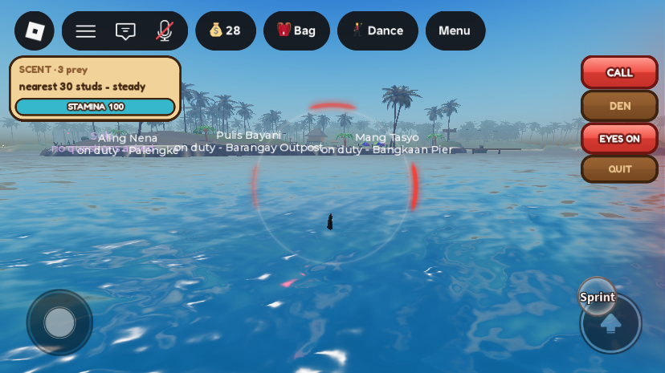
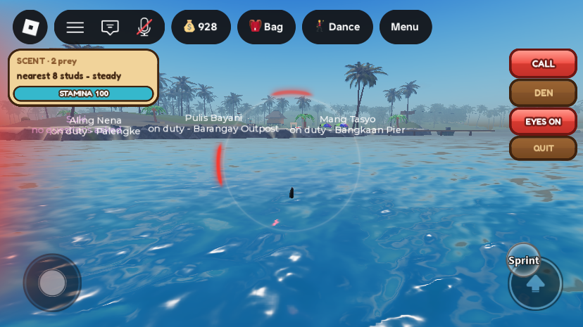
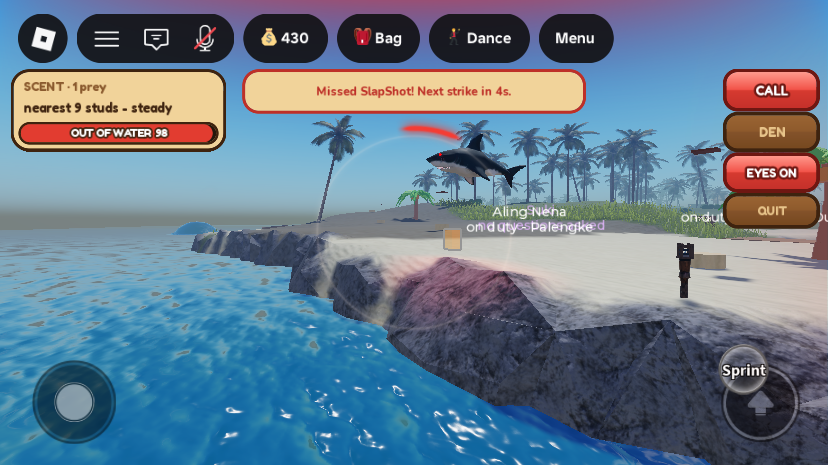

Shark sense ring (PUBG-style), the tail-slap strike, and admin /give
Not live yet. None of today's shark changes are in the published game until the place is published from Studio (File → Publish to Roblox). The owner first tried the strike in the live game, where it could not work for that reason.
What was asked (in order)
- Shark sense like PUBG's visual sound indicators: follow where the screen shows red. Answers: both a centre ring with red arcs and a red screen-edge aura; every prey in range, closer = stronger; uploaded PNG images.
- Players on a small island were almost impossible to hit. New move: the shark clicks a player when close enough, with a 49% chance to push them into the water. Answers: a hit does no damage, only throws the player off position, "toward the opposite direction of the shark" (a shark coming from the east throws a player on the west back east); 25 stamina, 4 s wait after a miss; targets are anyone near the water.
- "My shark won't jump on the player when I click" (tried in the live game, which doesn't have the strike yet). The click was also made more forgiving, and it now says why it can't strike.
- Four more points:
- sharks called for backup, and the shark player, must not drop shells into a lambat, so it can't be farmed;
- admins can add funds to any player on the server, a chat command is fine;
- the strike reaches 30 studs;
- the player hit flies as high as an AI shark bite.
- "It should look like it slaps the player with its tail or just passes by, no collision, like a normal shark jump."
What changed
1. The sense ring and the edge aura


- Server (
SharkPlayerService.scentTick, 4 Hz): sends every prey within 300 studs, nearest first, up toSCENT_MAX_TARGETS = 8, astargets = {{dir, dist}, ...}. Smell still ignores walls. - Ring: a faint circle in the middle of the screen (46% of the shorter side). It never takes a tap or click.
- Arcs: one red arc per prey, turned to its bearing from where the camera faces. Transparency runs from 0.8 far to 0.05 close, and the arc grows up to 8% bigger when close. The arcs are smoothed between updates.
- Edge aura: when the nearest prey is within 60 studs, the edge on its side glows red; top means ahead and bottom behind. The strength follows the square root of closeness: the first, linear version was too faint on bright water. It never goes past 0.25 transparency, and pulses under 20 studs.
- Card: the compass dial is gone. It reads "SCENT · N prey" over "nearest N studs – warmer/colder/steady", with the stamina bar unchanged.
| Image (uploaded with the owner's approval) | Asset |
|---|---|
sense_ring.png 512×512, thin soft circle | rbxassetid://72322686561590 |
sense_arc.png 512×512, ~36° glowing arc at 12 o'clock | rbxassetid://84187837575769 |
sense_edge.png 128×512, glow bright on its left edge | rbxassetid://89426249204212 |
White with alpha, tinted in the game. The source and the generator (make_sense_pngs.py, standard-library Python) are in D:\GitHubRepo\IslaMarahuyo\assets\ui\shark-sense\. They were uploaded through a temporary localhost server and the Studio MCP upload_image.
2. The strike: click or tap a player, the shark leaps up beside them and slaps them with its tail

- Who can be struck: anyone within
STRIKE_RANGE = 30studs (was 20) who is swimming, or withinSHORE_REACH = 10studs of the water: beach, small island, dock, boat. The check isnearWater, one voxel read of the block around and below them. Excluded: sharks, and anyone Jailed, Reviving or in a Shipwreck match. - Red outline (a
PatingTargetHighlight, shark's screen only), grey while the strike isn't ready. The first time one appears, a toast explains the strike. - Click or tap (
InputBeganMouseButton1 /TouchTap): picks the outlined player whose head, torso or root is within 70 px. The position is tried in both GUI and screen coordinates, since that differs between devices. A click on someone who isn't outlined, or while the strike isn't ready, now says why:- "Too far to strike – get within 30 studs (34 away)"
- "They are too far from the water to strike"
- "Not enough stamina to strike (12 of 25)"
- "Missed – next strike in 3s"
- Server (
strike) re-checks everything (5 studs of slack for lag), takes 25 stamina and rollsSTRIKE_CHANCE = 0.49. - The leap is a normal jump that tops out beside the target, never on them:
- 2.5 studs to one side on a hit, 7 on a miss;
STRIKE_PASS_ABOVE = 5studs above their middle (between 7 and 24 above the shark), so its body clears the sand they stand on.
lungeGo {launch, pass, recoil}. At the top (pass), the client sends the shark back the way it came atSTRIKE_RECOIL = 0.9of its approach speed, so it drops into the sea it leapt from.- The first version carried on past the player; against a player on an island it always came down on the island, beached.
- The second topped out level with the player and touched down on the sand.
- No collision: for the leap plus 1.5 s,
NoCollisionConstraints (PatingPassBy) keep the shark's body and the target's apart. Terrain, boats and everyone else still collide. - Tail slap: the server sets
SharkSlapAt(server time of the top of the leap). Every client whips that shark's mesh side to side once (±55° over 0.4 s) through the same Motor6D aim that points it where it swims. - Hit: at the top of the leap the target is ragdolled and thrown as high as an ambient shark's bite: 150 sideways, 400 up, with the same spin. The throw goes the way the shark came from: a shark from the east sends a player on the west side back east. No air or health is lost. The target gets "A shark leapt out of the sea and threw you off your feet!". That shark can't strike or hit them again for 10 s.
- Miss: "A shark lunged at you and missed!" for the target, and a 4 s wait for the shark (
SharkStrikeReadyAt). - Shark Poison still kills a shark that strikes at its holder, hit or miss.
- Also changed: the normal jump-leap hit now throws a player on a deck or shore at the same 150/400 as a swimmer (before, 40/75). Shore players now count as prey for the scent ring and the jump-leap too.
3. Called sharks can't farm a lambat
LambatServiceonly ever drops finds for the ambient sharks inActivities.Sharks. A Pating player never shakes anything out of a net, and that is now stated in the code.- The sharks that answer a Pating's CALL get
NoLambatUntil(server time) set bySharkService'sSharkSummon, for the 15 s call plus 60 s after. The lambat scan skips any shark whoseNoLambatUntilis still in the future.
4. Admins: /give Peso to anyone on the server
- In chat:
/give <player> <amount>, or/givepeso. For example/give Juan 500, or/give me 1000. - The name matches the start of a username or display name. If it matches several players or nobody, it says so. Amounts run from 1 to 100,000.
- It uses the dashboard's own
AdminService.GrantShells(ledger: "AdminGrant"), and the reply comes through the admin toast (AdminFeedback). - Admins only (
AdminConfig.IsAdmin). The command is hidden from chat autocomplete, and non-admins get no reply. - It is a
TextChatCommand(AdminGive) thatAdminBootstrapcreates underTextChatService.TextChatCommands. The dashboard's own grant still gives only to yourself.
All changes
| DataModel path | What | |
|---|---|---|
| edited | ServerScriptService.SharkPlayerService |
|
| edited | StarterPlayer.StarterPlayerScripts.SharkClient |
|
| edited | ServerScriptService.SharkService | SharkSummon sets NoLambatUntil on called sharks. |
| edited | ServerScriptService.LambatService | The shark scan skips sharks with a future NoLambatUntil. |
| edited | ServerScriptService.AdminBootstrap | /give command (findPlayer, onGiveCommand, GIVE_MAX 100000). |
| remote | ReplicatedStorage.Remotes.RequestSharkStrike | client → server, a Player (or a Studio dummy Model). |
| runtime | TextChatService.TextChatCommands.AdminGive | created by AdminBootstrap at start (in its own folder of that name when it runs before Roblox's default one; both work). |
| assets | 3 Roblox images; assets\ui\shark-sense\ in the repo | see above. |
No world edits. No instances removed. All scripts were written through ScriptEditorService:UpdateSourceAsync and compile.
Testing
Solo playtests in iPhone emulation with stand-in dummies (DebugPatingDummy), each ended with a Server-side kick. The data lock was checked released after each. No script errors in the logs; the only client errors are two old Health Post sound ids.
- Arcs: dummies 30 studs east, 120 north and 250 west, camera facing north: arcs at 90° / 0° / −90°, transparency 0.13 / 0.35 / 0.67.
- Aura: prey 8 studs to the left: left edge only, transparency 0.41 after the strengthening (0.63 before).
- Tail-slap strike (6 tries at a dummy on the sand at (60, 7, 470), from 16 and 28 studs out):
- Hits: closest pass 5.8–7.8 studs from the target's middle (2.5 to the side, 5 above), at the top of the leap. Every hit came back down in the water where it started (z 486–500, y −0.5).
- The miss passed 8.8 studs away and came down on the sand edge (z 480).
- Earlier versions: the carry-on-past version landed on the island every time, and the level-pass version touched down on the sand.
- Direction: the shark came from +Z (the sea), and the hit threw the target toward (0, 0, 1), back to the sea.
- Real click: a mouse click through the MCP on an outlined dummy fired a strike.
- /give:
- "/give me 1" gave +1 (729 → 730 after "/givepeso mers 1", which matched the name prefix).
- "/give nobody 50" → "No player here named "nobody"."
- "/give me 0" → "Amount must be 1 to 100000."
- "/give" → the usage line.
- Lambat: after a CALL, 6 of 78 ambient sharks carried
NoLambatUntil74 s into the future. The skip in the net scan was not run against a real planted net.
Test money: with the owner's OK, 1000 Peso were granted back to MERS_Cov2 through the admin GrantShells (ledger "AdminGrant") after role fees had run it down to 28, plus 2 Peso through the /give tests. Role fees in these tests then cost 400 more (the saved balance was 430 at the end). The live game also saw play in between.
Still unverified / known issues
- No real second player: the throw on a real character (ragdoll, 150 sideways and 400 up, no damage) and the victim's messages; also
/giveto another player (the name matching is the same code path as "me" and prefixes). - A finger tap was not tested (the MCP sends mouse clicks).
TouchTapuses the same picker. - Misses sometimes come down on the edge of the sand, beached for a moment.
- After the slap the shark turns round to face the way it falls (its pose follows its velocity), which reads as a flip back into the sea.
- The lambat skip needs a real net and a CALL to watch it work end to end.
- First-pass numbers: the strike throw, the arc's lift, the recoil, the 70 px tap tolerance and the aura strength.
- Blocked tests: testing was blocked twice while the owner's account was on a live server, since a Studio playtest can't load a player whose save another server holds.